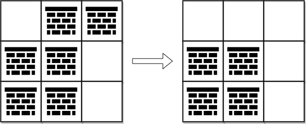
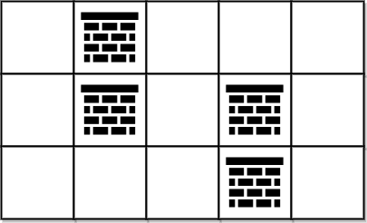

| Category | Difficulty | Likes | Dislikes |
|---|---|---|---|
| Algorithms | Hard | 1642 | 29 |
array | breadth-first-search | graph | heap-priority-queue | matrix | shortest-path
google | tiktok | amazon
You are given a 0-indexed 2D integer array grid of size m x n. Each cell has one of two values:
0 represents an empty cell,1 represents an obstacle that may be removed.You can move up, down, left, or right from and to an empty cell.
Return the minimum number of obstacles to remove so you can move from the upper left corner (0, 0) to the lower right corner (m - 1, n - 1).
Example 1:

Input: grid = [[0,1,1],[1,1,0],[1,1,0]]
Output: 2
Explanation: We can remove the obstacles at (0, 1) and (0, 2) to create a path from (0, 0) to (2, 2).
It can be shown that we need to remove at least 2 obstacles, so we return 2.
Note that there may be other ways to remove 2 obstacles to create a path.Example 2:

Input: grid = [[0,1,0,0,0],[0,1,0,1,0],[0,0,0,1,0]]
Output: 0
Explanation: We can move from (0, 0) to (2, 4) without removing any obstacles, so we return 0.
Constraints:
m == grid.lengthn == grid[i].length1 <= m, n <= 1052 <= m * n <= 105grid[i][j] is either 0 or 1.grid[0][0] == grid[m - 1][n - 1] == 0